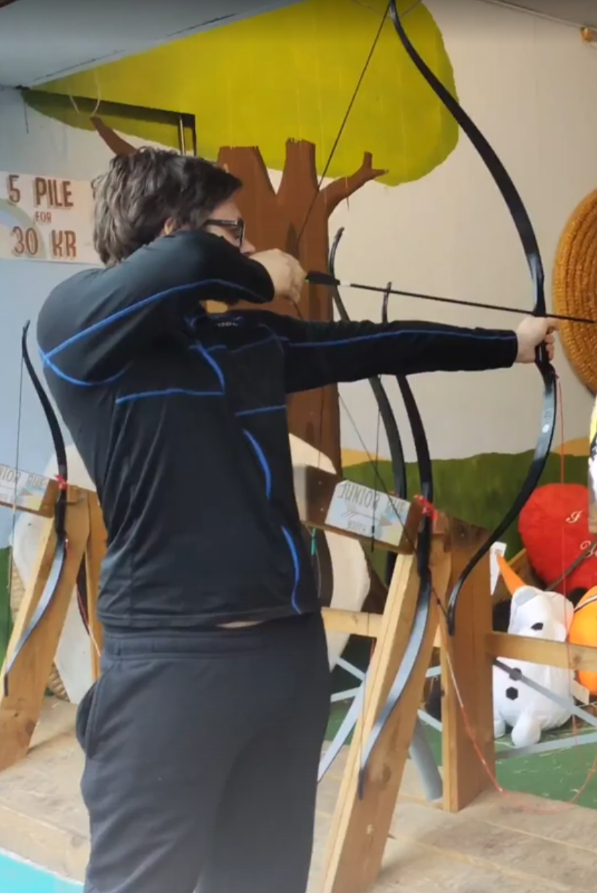

Om Mig
Jeg er en 3-D designer og webudvikling freelancer og har været interesseret og fascineret af teknologi hele mit liv, lige siden jeg begyndte at spille world of warcraft i en meget ung alder, var jeg interesseret i, hvordan 3-D modellerne og hvordan gamechanics fungerede Jeg var fascineret af snestorme tidlige film og troede, at de dybest set var ren magi,
Således startede min rejse til at opdage min kærlighed til 3-D-modellering og 3-D teknisk design, da jeg endelig blev færdig med folkeskolen. Jeg gik straks på en gymnasieskole. Denne gymnasieskole havde et felt, der havde hovedfaget 3-D-design og teknisk ingeniørarbejde, produktdesign og IT, Vi blev introduceret til et lille lille program ved navn auto desk fusion 360, der fulgte med en elevlicens og cnc-maskinerne, der kunne gøre enhver model, vi skabte, til en fungerende virkelighed, det er her rumkniven det prototypede knivbladshåndtag blev skabt og det startede min lange kærlighed og dermed 6 års erfaring i produkt 3-D.
Mens jeg lavede små freelance 3-D-projekter for venner, familie og lejlighedsvis kunde, gik jeg og arbejdede i detailbutikker, hvilket gav mig en bedre og større forståelse af virksomhedernes indre funktioner og de nødvendige krav til lederroller, senere besluttede jeg, at jeg ønskede at fremme min 3-D og lære programmer såsom 3-D S Max V ray og blender.
Så jeg startede på FGU, En broskole mellem mine nuværende karakterer og kravkaraktererne, der skulle vare i 6 måneder for lige at få de nødvendige karakterer til at komme ind på den skole, jeg i øjeblikket er i mit nye 3-D kursus. Mens jeg deltog i skolen, krævede jeg en vis pengeindkomst og besluttede at søge et job, men dette jobmiljø, mens jeg sidst havde 2 måneder, var utroligt giftigt og var ikke et særlig rart sted at arbejde, men det lærte mig dog værdier af energibesparelse og søvn, da jeg arbejdede en næsten 19 timers arbejdsdag, hvor halvdelen var skole og den anden halvdel var en nat.
Derefter gik jeg endelig på den skole, som jeg i øjeblikket er på nu, og jeg nyder og elsker 3-D-udviklingen og den webudvikling, som jeg i øjeblikket deltager i, hele denne hjemmeside blev skabt fra bunden med en ugudelig mængde kode Mens jeg skriver dette, læser jeg disse linjer kode, for mig er dette ikke arbejde, det er en passion, og jeg vil bringe den samme positivitet og energi til arbejdspladsen.
min fritid
I min fritid kan jeg godt lide at lave aktiviteter, jeg kan godt lide at cykle på min cykel i flere kilometer med den højeste hastighed, jeg kan gøre, jeg kan godt lide at læse, jeg nyder at spille airsoft, og jeg plejede at skyde bue, og jeg søger at komme tilbage til min gamle sport, jeg dyrker videospil nogle bemærkelsesværdige titler som modern warfare 2 og overwatch
